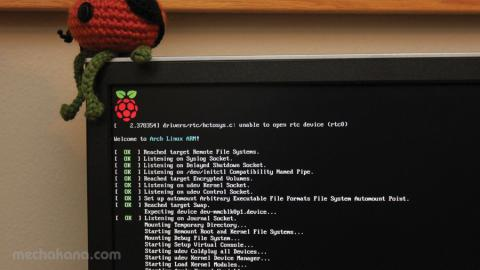

Tip para XBMC/Kodi en Archlinux | ARM

Hace rato que en la raspy deje de usar XBIAN porque le estaban agregando muchas cosas "automagicas" que no me interesaban. Así que instale un Archlinux ARM y le puse XBMC. Anda de lujo, pero hay que meter un par de detalles en el config.txt de la raspy para que funcione "lindo" Ayer cambie la SD por una clase10 de 16GB y como tuve que reinstalar aprovecho para compartir las cosas que le cambio.
Básicamente hay que instalarlo con un pacman -S xbmc y después hay que editar el archivo que está en /boot/config.txt y poner lo de abajo:
#My overclocking arm_freq=950 core_freq=450 sdram_freq=450 over_voltage=6 # Tuning to XBMC Video gpu_mem_512=128 gpu_mem_256=100 #Witout this the Youtube addon for XBMC/Kodi doesn't work start_x=1